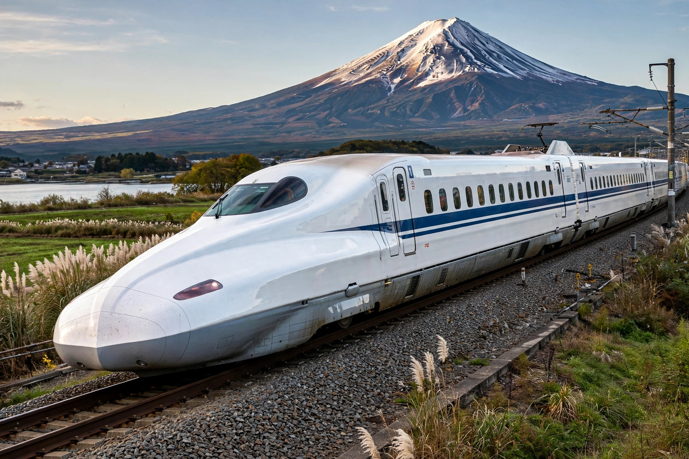

Shinkansen
From Wikipedia, the free encyclopedia

A Shinkansen with Mount Fuji behind.The Shinkansen (Japanese: 新幹線, \'new main line\') is a network of high-speed railway lines in Japan, mainly operated by the JR group companies. Opened in 1964 between Tokyo and Osaka for the Tokyo Olympics, it pioneered high-speed rail and is famed for its punctuality, frequency and safety record: no passenger fatalities due to derailment or collision in over half a century of operation.
History
Post-war Japan\'s Tōkaidō main line was saturated, and chief engineer Hideo Shima championed a new standard-gauge line despite Japan\'s narrow-gauge legacy. The Tōkaidō Shinkansen opened on 1 October 1964 with 0 Series trains running at 210 km/h, cutting Tokyo–Shin-Osaka to about four hours, later about 2 hours 20 minutes.
Network and trains
Lines radiate from Tokyo to Shin-Aomori, Niigata, Kanazawa, Hakodate (via the Seikan Tunnel), and from Osaka to Kagoshima on Kyushu. Successive train series — 100, 300, 500, 700, E2, E5 and E7 — raised speeds to 320 km/h on the Tōhoku line, with distinctive long noses and tilting bodies on some services.
Operation
Trains run as often as every few minutes on the Tōkaidō line with average delays measured in seconds. Advanced earthquake detection stops trains automatically; in the 2011 Great East Japan Earthquake, no Shinkansen derailed fatally. The system has carried over 10 billion passengers cumulatively.
Maglev successor
The Chūō Shinkansen, a superconducting maglev line between Tokyo and Nagoya (later Osaka) tested at 500 km/h in service planning, is under construction, with the opening repeatedly delayed, most recently by disputes over tunnelling in Shizuoka Prefecture.